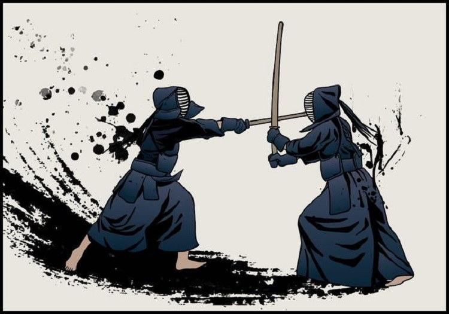

Postado por Felipe Macedo
Referencias: http://www.educacaofisica.seed.pr.gov.br / http://m.niten.org.br / https://www.japaoemfoco.com
19 de Julho de 2023
Conhecido como a arte marcial dos samurais, o Kendô foi mais difundido a partir do século 16. Porém, tanto o judô como o aikidô, e outras manifestações artísticas como o ikebana (kadô), caligrafia (shodô) e a cerimônia do chá (sadô) se pautam do mesmo princípio. Todos levam o termo “dô”, que significa “caminho”. É o caminho da perfeição, na verdade inatingível.
Ao contrário de outras práticas esportivas, o Kendô, o judô e o aikidô, não têm como princípio a conquista da vitória. Essas modalidades esportivas visam o aperfeiçoamento, não somente esportivo, mas principalmente, o aperfeiçoamento como ser humano. Daí serem um “caminho”, um meio, e não o fim.
As origens do Kendô remontam ao Japão feudal, quando os samurais eram os guerreiros da elite. O treinamento com a espada era essencial para sua habilidade em combate e sobrevivência.
A arte marcial que eventualmente se tornou Kendô começou a se desenvolver no século XVII, durante o período Edo. Nessa época, os samurais foram submetidos a um rígido código de conduta conhecido como bushido, que enfatizava a disciplina, a honra e a lealdade.
Por este motivo, o respeito ao adversário, ao mestre e ao local onde se pratica o esporte é muito valorizado. Há em todas elas profundas regras de comportamento, como o cumprimento ao adversário no início e no final de cada partida, agradecendo ao oponente independente do resultado.
Kendô é uma espécie de esgrima. Seus lutadores utilizam uma espada de bambu e são protegidos por uma armadura pesada. Os oponentes procuram esquivar-se dos golpes do adversário e procuram atingir com o bastão os três alvos: a cabeça, o braço e a lateral do tórax.
Ao longo do tempo, várias escolas de esgrima surgiram no Japão, cada uma com sua própria abordagem e técnicas. No entanto, foi com a criação da "Shinai Kyogi" (Competição com Shinai) em meados do século XVIII que o Kendô como o conhecemos hoje começou a se consolidar. Essa competição permitiu que os samurais treinassem uns contra os outros sem risco de ferimentos graves, utilizando shinai ao invés de espadas reais.
Ao longo do século XX, o Kendô ganhou popularidade além das fronteiras do Japão. Através de competições internacionais, intercâmbios e a abertura de dojos (academias de Kendô) em todo o mundo, o Kendô se tornou uma prática apreciada por pessoas de diversas culturas.
O Kendô, como arte marcial e prática cultural, tem uma história rica e fascinante. Originado dos samurais do Japão feudal, o Kendô evoluiu ao longo dos séculos, mantendo sua essência e valores fundamentais.
Hoje, essa prática continua a cativar e inspirar pessoas em todo o mundo, transmitindo não apenas as habilidades de combate, mas também os princípios de respeito, disciplina e autoaperfeiçoamento.